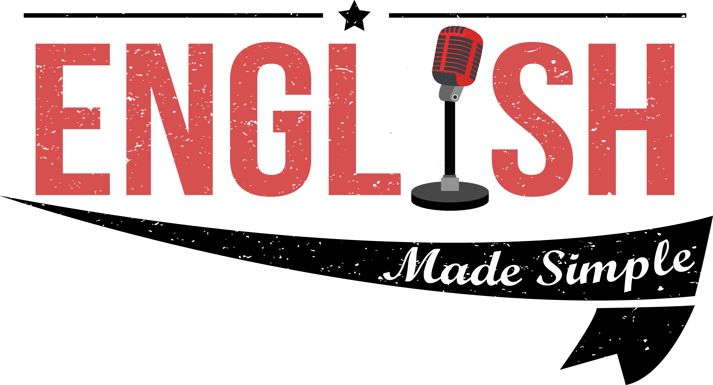

Algo que es clave para aprender a programar y que te sera de un gran ayuda , sin mencionar que sera clave para conseguir trabajo como programador, es el
Ingles, ya que casi el 99% si no es que todos los lenguajes de programacion se basan en el idioma ingles para el uso de comandos.Ademas que sirve como una gran carta de presentación el dominar el idioma, ademas que te puede permitir trabajar en otros paises.Basicamente:

¡You can't be a programmer if you don't know english!